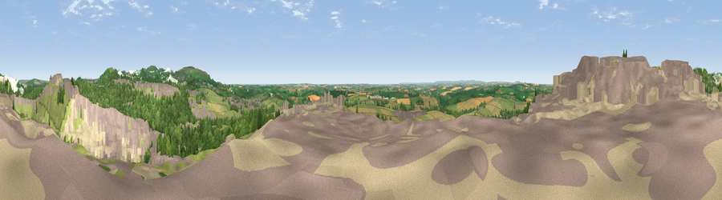

Viewpoint near Trethosa
#1383 in England · top 3% of its area beats it · near TrethosaThe view, rendered

A 360° render of this exact spot computed from the terrain model, tree cover and land cover — summer colours, afternoon light, calibrated against photographs of famous viewpoints. Real trees, hedges and buildings will differ in detail.
The panorama
Grey silhouette: terrain skyline in each direction (720 bearings, Earth curvature and refraction included). Dashed green: skyline with trees (+15 m) and buildings (+8 m) as obstacles. Blue strip: how far the ground is visible on each bearing.
Where the view opens
Wedge length = distance to the farthest visible ground on that bearing (vegetation-aware). Rings at 10, 25 and 50 km.
What fills the view
38% grassland · 17% woodland · 17% bare ground · 15% cropland · 13% built-up ·
Angular shares of the visible panorama (visual magnitude), not map area. Landscape diversity 0.67 (0–1 Shannon).
Key numbers
More beautiful places nearby
The staircase of upgrades: each row has a higher view potential than everything closer. Driving times are estimates from straight-line distance, calibrated against real road routing — check an actual route before setting out.
| Place | Direction | Drive | Score |
|---|---|---|---|
| Viewpoint near Penhale | NW · 1 km | ~3 min | 81.7 |
| Viewpoint near Foxhole | E · 5 km | ~12 min | 86.4 |
| Viewpoint near Stenalees | ENE · 8 km | ~17 min | 88.0 |
| Viewpoint near Crackington Haven | NNE · 45 km | ~65 min | 88.1 |
| Viewpoint near Combe Martin | NNE · 115 km | ~139 min | 88.9 |
| Holdstone Hill | NE · 116 km | ~140 min | 90.2 |
| The Knoll | ENE · 164 km | ~186 min | 91.0 |
50.35656, -4.92303 · source: screening · position refined by local search. Computed location — check access rights before visiting.